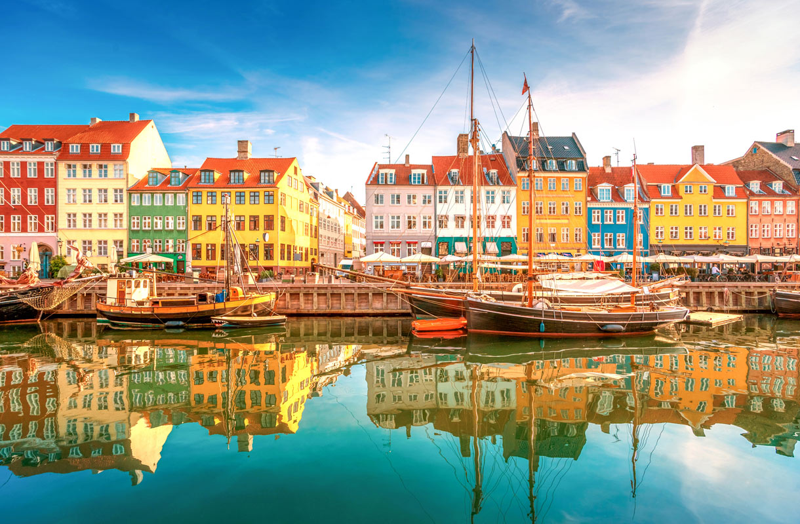
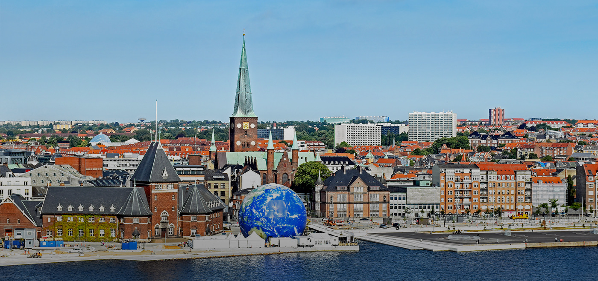
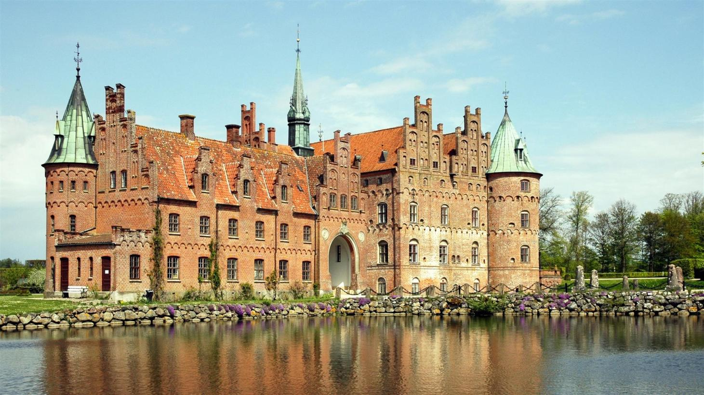
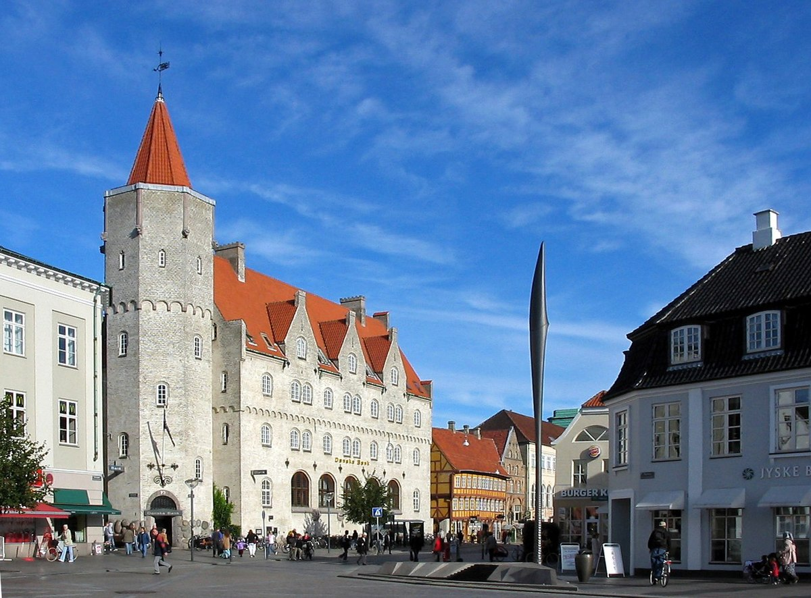
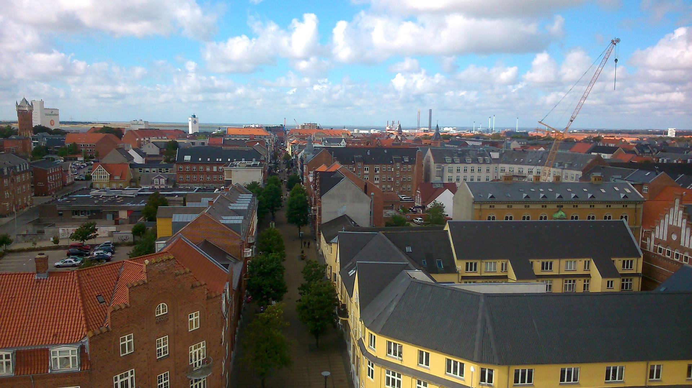

| Kaupunki | Asukasluku |
|---|---|
| Kööpenhamina | 633 449 (Metropolialue 1 278 094) |
| Aarhus | 335 684 |
| Odense | 202 348 |
| Aalborg | 113 417 |
| Esbjerg | 72 261 |
Tanskan pääkaupunki Kööpenhamina on aina ollut Pohjoismaiden erikoisin ja eksoottisin vierailupaikka, jonne suuntaava pääsee nauttimaan niin Pohjolan kuin läntisen Euroopankin parhaista puolista. Tämä on merellinen miljoonakaupunki, jolla edelleenkin on kylämäisiä piirteitä ja joka on aina ollut tunnettu huvittelupaikka. Viime aikoina Kööpenhamina on myös kohonnut kansainvälisen luokan gourmetkeskukseksi, jossa sijaitsevat eräät Euroopan parhaat ravintolat ja jonka ravintolamaailma on parin viime vuosikymmenen aikana kokenut täydellisen mullistuksen.
Aarhus, Jyllannin saarella Tanskassa sijaitseva kaupunki on mielenkiintoinen käyntikohde. Tämä vuoden 2017 Euroopan kulttuuripääkaupungin keskusta on vilkas ja eloisa. Kävelykatujen varsilla on runsaasti terasseja ja ravintoloita. Shoppailumahdollisuudet ovat hyvät, vaikka Tanska ei olekaan mikään halvin mahdollinen maa tehdä ostoksia. Vanha katedraali kohoaa korkealle, 96 metriin, ja on maan korkein kirkko.
Odense on Tanskassa Etelä-Tanskan alueella sijaitsevan Odensen kunnan keskustaajama. Odense on Tanskan kolmanneksi suurin kaupunkitaajama Kööpenhaminan ja Aarhusin jälkeen. Se sijaitsee Fynin saarella, ja on Etelä-Tanskan alueen suurin taajama. Kaupunki sijaitsee Odensejoen rannalla, 147 km Kööpenhaminasta länteen. Kööpenhaminan ja Jyllannin välinen rautatie kulkee Odensen kautta. Yksi Etelä-Tanskan yliopiston kampuksista sijaitsee Odensessa. Siellä opiskelee noin 12 000 opiskelijaa.
Aalborg on Tanskassa Pohjois-Jyllannin alueella sijaitsevan Aalborgin kunnan keskustaajama.Aalborgin kaupunki sijaitsee Jyllannin niemimaalla Limvuonon etelärannalla. Aalborg on Tanskan neljänneksi suurin kaupunkitaajama Kööpenhaminan, Aarhusin ja Odensen jälkeen ja Pohjois-Jyllannin suurin kaupunki.Aalborg on vanhastaan teollisuuskaupunki. 1800-luvun puolivälistä on kaupungissa tuotettu akvaviittia. Vuosisadan loppupuolella alkoi myös sementintuotanto.
Esbjerg on Tanskassa Etelä-Tanskan alueella sijaitsevan Esbjergin kunnan keskustaajama.Esbjerg on myös entinen kaupunki, mutta vuoden 1970 kuntauudistuksessa kaupunkikäsitteestä luovuttiin. Vuonna 1868 Tanskan kansankäräjät päätti perustaa sataman Esbjergin seudulle, joka siihen asti oli ollut hyvin eristynyttä syrjäseutua. Kaupungin kehittymisen katsotaan alkaneen tästä.
